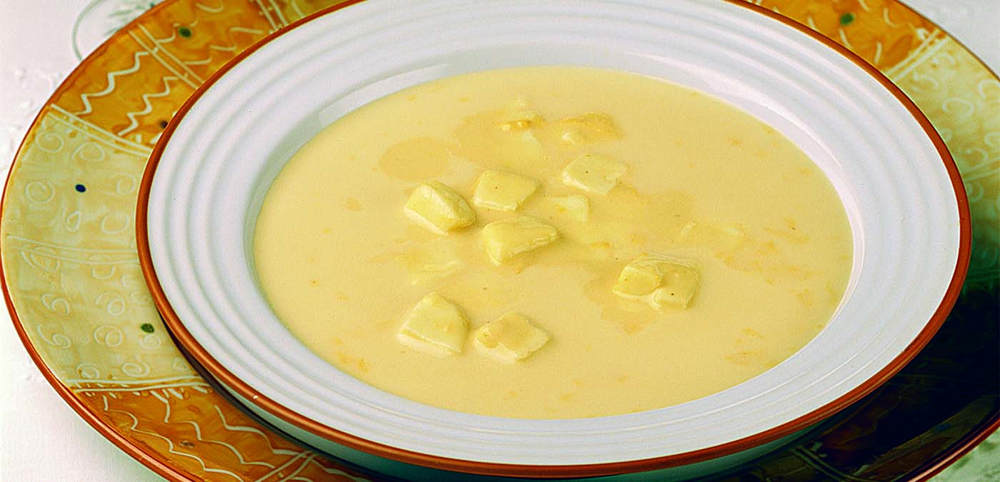

Idioma
pt-BR
/
En
Sopa de Queijo

Description
A receita de uma das melhores sopas!
Rende 5 porções.
Ingredientes
3 colheres (sopa) de margarina
1 xícaras de chá de farinha de trigo
3 copos (de 200ml) de leite fervido
1 tablete de caldo de galinha
125g de queijo tipo Prato cortado em cubinhos
5 colheres de sopa cheias de queijo tipo Parmesão ralado
1 litro de água
sal a gosto
Modo de Preparo
Em uma panela grande, derreta a margarina e adicione a farinha de trigo, mexendo até dourar.
Acrescente o leite fervido, aos poucos, mexendo sempre, até formar um creme homogêneo, sem grumos.
A parte, dissolva o caldo de galinha em um pouco de água fervida e adicione ao creme, juntamente com o restante da água.
Continue mexendo sempre e acrescente o queijo ralado.
No momento de servir, adicione o queijo tipo Prato.
Dica
Sirva quente!!!
Retornar ao topo
Retornar a página inicial